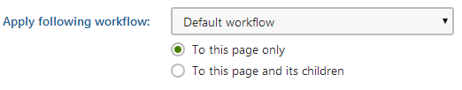
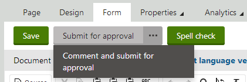
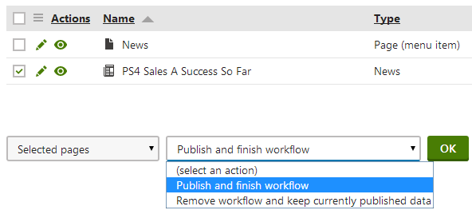

Using workflows
What is a workflow?
Workflow is a sequence of steps that define the life cycle of pages. This ensures the quality of content and design by setting up a reviewing and approval process. In such a process, individual roles and users can work with pages in certain steps of their life cycle (such as Edit, Published, Archived, ...).
An example of a simple workflow process is a website that publishes scientific articles. An author writes an article and sends it for approval to an editor. The editor makes corrections and submits the article to the head of the respective department. The head then publishes the page, thus making it publicly available to read on the website.
Note
Workflow only covers editing of page content, typically on the Page or Form tab in the Pages application. Changes made to the static design of pages are outside the scope of workflow (for example editing the content of a Static text web part on the Design tab of a page).
Using workflows
This topic describes how you can manage pages under a workflow.
The following tasks refer to buttons in the Pages application by their default captions, e.g., Submit for approval, Approve, Reject. However, the caption texts are customizable, so you may not always see the same buttons in the user interface.
Applying a workflow on a page
This functionality is useful when you want to apply a workflow on a page, or a page and its children. For example, when you create a page outside of an existing workflow scope.
Your site needs to have at least one workflow defined, and you need to have the Manage workflow permission assigned in the content module to be able to use this functionality.
To apply a workflow on a single page or a page and its children:
In the Pages application, navigate to the page that you want to apply a workflow on.
Click Apply workflow.
Select the workflow that you want to apply on the page.
Choose from the following options:
To this page only
To this page and its children

Selecting a workflow to apply to a pageApplying a workflow on a page directly also creates a workflow scope that can be edited later.
Click Save & Close.
Submitting a page for approval
When a page is in the Edit step, you can submit it for approval to move it to the next step.
In the Pages application, navigate to the page that you want to submit for approval.
Click Submit for approval. The page will be moved to the next step in the workflow process.
Submitting a page for approval with a comment
To submit a page for approval and add a comment for the person who will be approving it, follow these steps:
In the Pages application, navigate to the page that you want to submit for approval.
Click (...) icon next to the Submit for approval button and then click Comment and submit for approval. A dialog box opens.

Commenting and submitting a pagefor approvalEnter your comment and click Approve. The page moves to the next step in the workflow process.
Viewing pages waiting for your approval
To view and manage pages that are in a workflow step that you can approve:
Open the Pending pages application.
(Optional) Click Navigate to page to view the current version of the page on the live site.
(Optional) Click Edit to make changes to the page and approve or reject it.
Approving and rejecting a page
When a page reaches a step that requires user interaction, you can approve the page, or, if settings of the step permit, reject it.
Navigate to the page you want to approve or reject.
(Optional) Make changes to the page.
(Optional) Disable the Send notification e-mails checkbox to prevent the system from sending e-mails to users involved in the next step.
Approve or reject the page. Note that if the step that follows is the Published step, the default text of the Approve button changes to Publish.
To approve the page without commenting on the approval, click Approve.
To reject the page without commenting on the rejection, click Reject.
To approve the page and make a comment, click the arrow icon next to the Approve button, then click Comment and approve. Enter your comment into the dialog box and click Approve.
To reject the page and make a comment, click the arrow icon next to the Reject button, then click Comment and reject. Enter your comment into the dialog box and click Reject.
Publishing a page
When a page is published, its most recent version will be made available to visitors on the live site. You can publish pages in one of the following ways:
Manually moving through the whole workflow process
Directly publishing if the current step allows it
Publishing multiple page at once
Manually moving through the whole workflow process
Navigate to the page that you want to publish.
Repeatedly approve the page until it is in the Published step.
Directly publishing a page
When a page is in a standard approval step and the settings of the step allow it, you can publish the page immediately. To do this, a direct approval path must exist in the workflow process. Direct publishing won't work if your workflow process contains user decisions.
Navigate to the page that you want to publish.
Click the arrow icon next to the Approve button, then click Approve until published.
Publishing multiple pages at once
You can publish entire sections of your website using the List mode.
In the Pages application, switch to the Listing mode.
Navigate to the page, which is a parent of the pages that you want to publish.
Select the pages you want to publish. You have two options:
Check the boxes next to pages you want to publish.
Select All pages in the drop-down list below the page list.
Select Publish in the drop-down list marked (select an action) and click OK to confirm. You will be redirected to a page with the list of pages to be published.
(Optional) Adjust the following settings:
Publish also all child pages
Perform Undo check-out for checked out pages – if checked, all pages that are checked out will be checked in and the changes made during the last check-out will be discarded.
Click Yes to start publishing the pages.
Archiving a page
When you archive a page, it stays in its location in the content tree, but it isn't visible on the live site. You can archive pages in one of the following ways:
Manually archiving
Archiving multiple pages at once
Manually archiving a page
When a page reaches a step that is immediately followed by the Archived step, you can click the Archive button to archive the page.
Archiving multiple pages at once
You can archive entire sections of your website using the List mode.
In the Pages application, switch to the Listing mode.
Navigate to the page, which is a parent of the pages that you want to archive.
Select the pages you want to archive. You have two options:
Check the boxes next to pages you want to archive.
Select All pages in the drop-down list below the page list.
Select Archive in the drop-down list marked (select an action) and click OK to confirm. You will be redirected to a page with the list of pages to be archived.
(Optional) Adjust the following settings:
Archive also all child pages
Perform Undo check-out for checked out pages - if checked, all pages that are checked out will be checked in and the changes made during the last check-out will be discarded.
Click Yes to start archiving the pages.
Viewing a page's workflow history
For all pages under a workflow, the system records every move from one step to another. That means that you can review all the workflow actions that were performed on the page, the users who performed them and comments.
To view the workflow history of a page, select it in the content tree of the Pages application and navigate to Properties -> Workflow.
Restarting a workflow cycle
When a page reaches the Published or Archived step (whichever comes first), it completes its workflow cycle. That means that the page has gone all the way from the Edit step through the whole process to the final step. To start a new cycle and put the page back to the edit step, do the following:
If you're using basic workflow, open the page in the Pages application, make changes to it and click Save. This will create a new version of the page.
If you're using advanced workflow, click Create new version.
When you start a new cycle, the system re-evaluates workflow scopes that cover this page and chooses the workflow with the highest priority.
Removing pages from a workflow
If you want to remove pages from an existing workflow. That is, pages that are under a workflow scope, and that are in any of the steps belonging to the workflow, then proceed as follows:
Open the Workflows application.
Edit (
 ) the workflow from which you want to remove the page.
) the workflow from which you want to remove the page.Switch to the Pages tab.
Select the pages that you want to remove from the workflow.
Choose the Remove workflow and keep currently published data option in the second drop-down list under the list of pages.

Removing a page from a workflowClick OK.
Note that this action does not remove the page from under the workflow scope. It may become part of the workflow again when modified.